Существуют дроби, у которых в дробной части некоторые цифры бесконечно повторяются. Выглядят эти дроби следующим образом:
0,66666666666666…
0,33333333333333…
0,68181818181818…
Дроби такого вида называют периодическими. В данном уроке мы попробуем разобраться, что это за дроби и как с ними работать.
Получаем периодическую дробь
Попробуем разделить 1 на 3. Не будем подробно останавливаться на том, как это сделать. Этот момент подробно описан в уроке действия с десятичными дробями, в теме деление меньшего числа на большее. Продвинутый уровень.
Итак, делим 1 на 3
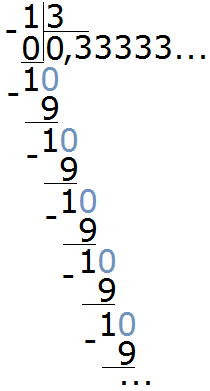
Видно, что мы постоянно получаем остаток 1, далее приписываем к нему 0 и делим 10 на 3. И это повторяется вновь и вновь. В результате в дробной части каждый раз получается цифра 3. Деление 1 на 3 будет выполняться бесконечно, поэтому разýмнее будет остановиться на достигнутом.
Такие дроби называют периодическими, поскольку у них присутствует период цифр, который бесконечно повторяется. Период цифр может состоять из нескольких цифр, а может состоять из одной как в нашем примере.
В примере, который мы рассмотрели выше, период в дроби 0,33333 это цифра 3. Обычно такие дроби записывают сокращённо. Сначала записывают цéлую часть, затем ставят запятую и в скобках указывают период (цифру, которая повторяется).
В нашем примере повторяется цифра 3, она является периодом в дроби 0,33333. Поэтому сокращённая запись будет выглядеть так:
0, (3)
Читается как «ноль целых и три в периоде»
Пример 2. Разделить 5 на 11
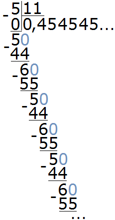
Это тоже периодическая дробь. Период данной дроби это цифры 4 и 5, эти цифры повторяются бесконечно. Сокращённая запись будет выглядеть так:
0, (45)
Читается как «ноль целых и сорок пять в периоде»
Пример 3. Разделить 15 на 13
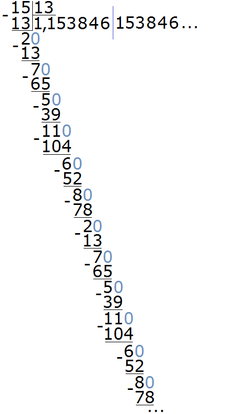
Здесь период состоит из нескольких цифр, а именно из цифр 153846. Для наглядности период отделён синей линией. Сокращённая запись для данной периодической дроби будет выглядеть так:
1, (153846)
Читается как: «одна целая сто пятьдесят три тысячи восемьсот сорок шесть в периоде».
Пример 4. Разделить 471 на 900
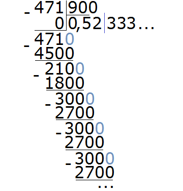
В этом примере период начинается не сразу, а после цифр 5 и 2. Сокращённая запись для данной периодической дроби будет выглядеть так:
0, 52 (3)
Читается как: «ноль целых пятьдесят две сотых и три в периоде».
Виды периодических дробей
Периодические дроби бывают двух видов: чистые и смéшанные.
Если в периодической дроби период начинается сразу после запятой, то такую периодическую дробь называют чистой. Например, следующие периодические дроби являются чистыми:
0, (3)
0, (6)
0, (5)
Видно, что в этих дробях период начинается сразу после запятой.
Если же в периодической дроби период начинается не сразу, а после некоторого количества не повторяющихся цифр, то такую периодическую дробь называют смéшанной. Например, следующие периодические дроби являются смéшанными:
0,52 (3)
0,16 (5)
0,31 (6)
Видно, что в этих дробях период начинается не сразу, а после некоторого количества не повторяющихся цифр.
Избавляемся от хвоста
Подобно тому, как ящерица избавляется от хвоста, мы можем избавить периодическую дробь от повторяющегося периода. Для этого достаточно округлить эту периодическую дробь до нýжного разряда.
Например, округлим периодическую дробь 0, (3) до разряда сотых. Чтобы увидеть сохраняемую и отбрасываемую цифру, временно запишем дробь 0, (3) не в сокращённом виде, а в полном:
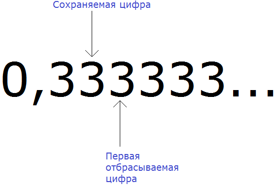
Вспоминаем правило округления. Если при округлении чисел первая из отбрасываемых цифр 0, 1, 2, 3 или 4, то сохраняемая цифра остаётся без изменений.
Значит периодическая дробь 0, (3) при округлении до сотых обращается в дробь 0,33
0, (3) ≈ 0,33
Округлим периодическую дробь 6,31 (6) до разряда тысячных.
Запишем эту дробь в полном виде, чтобы увидеть сохраняемую и отбрасываемую цифру:
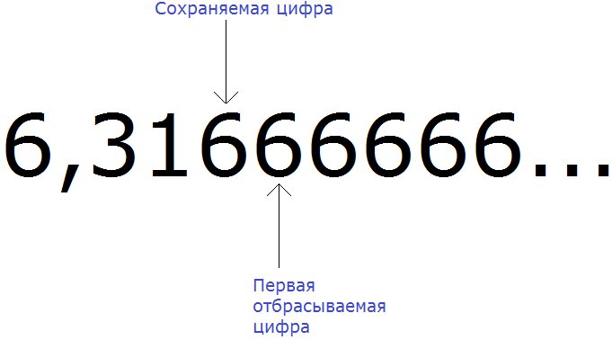
Вспоминаем правило округления. Если при округлении чисел первая из отбрасываемых цифр 5, 6, 7, 8 или 9, то сохраняемая цифра увеличивается на единицу.
Значит периодическая дробь 6,31 (6) при округлении до тысячных обращается в дробь 6,317
6,31 (6) ≈ 6,317
Перевод чистой периодической дроби в обыкновенную дробь
Перевод периодической дроби в обыкновенную это операция, которую мы будем применять довольно редко. Тем не менее, для общего развития желательно изучить и этот момент. А начнём мы с перевода чистой периодической дроби в обыкновенную дробь.
Мы уже говорили, что если период в периодической дроби начинается сразу после запятой, то такую дробь называют чистой.
Чтобы перевести чистую периодическую дробь в обыкновенную дробь, нужно в числитель обыкновенной дроби записать период периодической дроби, а в знаменатель обыкновенной дроби записать некоторое количество девяток. При этом, количество девяток должно быть равно количеству цифр в периоде периодической дроби.
В качестве примера, рассмотрим чистую периодическую дробь 0, (3) — ноль целых и три в периоде. Попробуем перевести её в обыкновенную дробь.
Правило гласит, что в первую очередь в числитель обыкновенной дроби нужно записать период периодической дроби.
Итак, записываем в числителе период дроби 0, (3) то есть тройку:
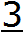
А в знаменатель нужно записать некоторое количество девяток. При этом, количество девяток должно быть равно количеству цифр в периоде периодической дроби 0, (3).
В периодической дроби 0, (3) период состоит из одной цифры 3. Значит в знаменателе обыкновенной дроби записываем одну девятку:
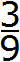
Полученную дробь
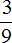
можно сократить на 3, тогда получим следующее: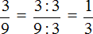
Получили обыкновенную дробь
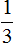
.Таким образом, при переводе периодической дроби 0, (3) в обыкновенную дробь получается
Пример 2. Перевести периодическую дробь 0, (45) в обыкновенную дробь.
Здесь период составляет две цифры 4 и 5. Записываем эти две цифры в числитель обыкновенной дроби:
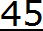
А в знаменатель записываем некоторое количество девяток. Количество девяток должно быть равно количеству цифр в периоде периодической дроби 0, (45).
В периодической дроби 0, (45) период состоит из двух цифр 4 и 5. Значит в знаменателе обыкновенной дроби записываем две девятки:
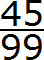
Полученную дробь
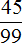
можно сократить эту дробь на 9, тогда получим следующее: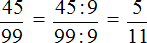
Таким образом, при переводе периодической дроби 0, (45) в обыкновенную дробь получается
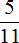
Перевод смешанной периодической дроби в обыкновенную дробь
Чтобы перевести смешанную периодическую дробь в обыкновенную дробь, нужно в числителе записать разность в которой уменьшаемое это цифры, стоящие после запятой в периодической дроби, а вычитаемое — цифры, стоящие между запятой и первым периодом периодической дроби.
В знаменателе же нужно записать некоторое количество девяток и нулей. При этом, количество девяток должно быть равно количеству цифр в периоде периодической дроби, а количество нулей должно быть равно количеству цифр между запятой и периодом периодической дроби.
Например, переведём смешанную периодическую дробь 0,31 (6) в обыкновенную дробь.
Сначала запишем в числителе разность. Уменьшаемым будут все цифры, стоящие после запятой (включая и период), а вычитаемым будут цифры, стоящие между запятой и периодом:
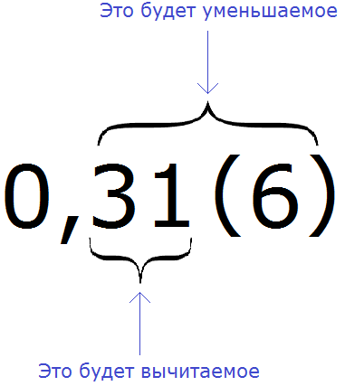
Итак, записываем в числителе разность:
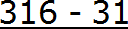
А в знаменателе запишем некоторое количество девяток и нулей. Количество девяток должно быть равно количеству цифр в периоде периодической дроби 0,31 (6)
В дроби 0,31 (6) период состоит из одной цифры. Значит в знаменатель дроби записываем одну девятку:
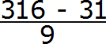
Теперь дописываем количество нулей. Количество нулей должно быть равно количеству цифр между запятой и периодом периодической дроби.
В дроби 0,31 (6) между запятой и периодом располагается две цифры. Значит в знаменателе дроби должно быть два нуля. Дописываем их:
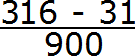
Получили выражение, которое вычисляется легко:
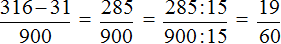
Получили ответ
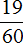
Таким образом, при переводе периодической дроби 0,31 (6) в обыкновенную дробь, получается
Пример 2. Перевести смешанную периодическую дробь 0,72 (62) в обыкновенную дробь
Сначала запишем в числителе разность. Уменьшаемым будут все цифры, стоящие после запятой (включая и период), а вычитаемым будут цифры, стоящие между запятой и периодом:
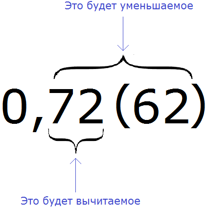
Итак, записываем в числителе разность:
А в знаменателе запишем некоторое количество девяток и нулей. Количество девяток должно быть равно количеству цифр в периоде периодической дроби 0,72 (62)
В дроби 0,72 (62) период состоит из двух цифр. Значит в знаменатель дроби записываем две девятки:
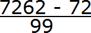
Теперь дописываем количество нулей. Количество нулей должно быть равно количеству цифр между запятой и периодом периодической дроби.
В дроби 0,72 (62) между запятой и периодом располагаются две цифры. Значит в знаменателе дроби должно быть два нуля. Дописываем их:
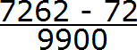
Получили выражение, которое вычисляется легко:
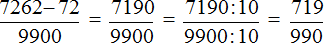
Получили ответ
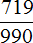
Значит при переводе периодической дроби 0,72 (62) в обыкновенную дробь, получается